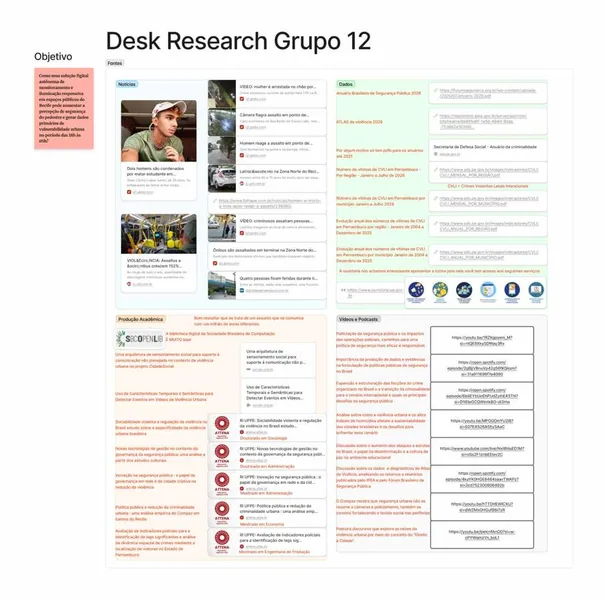
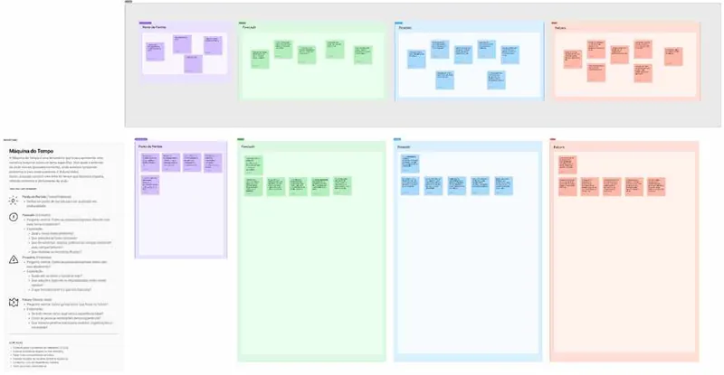
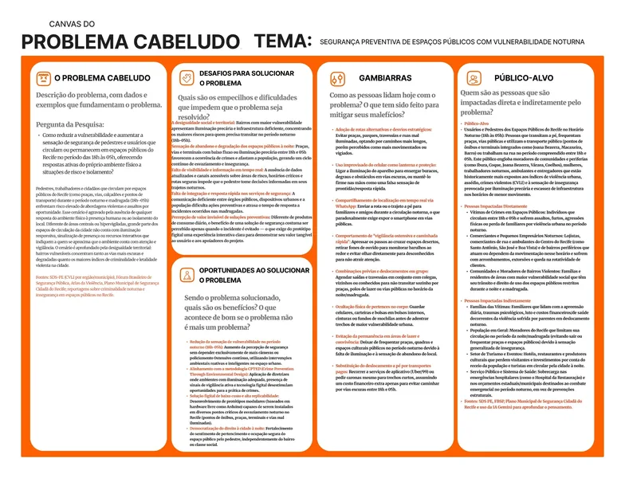
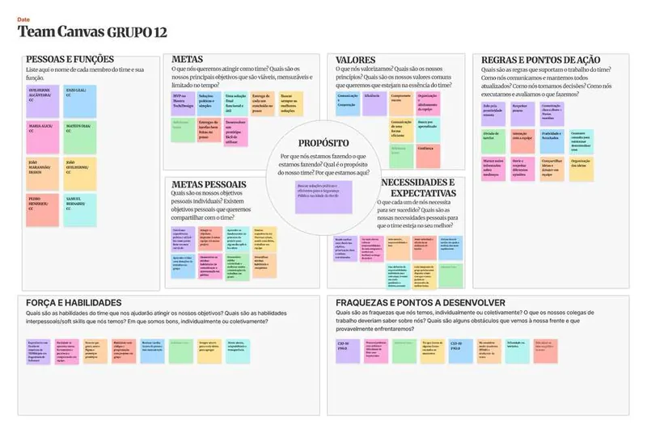
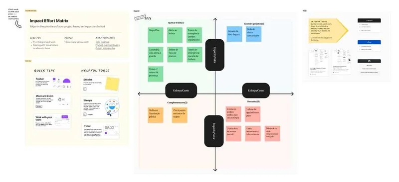
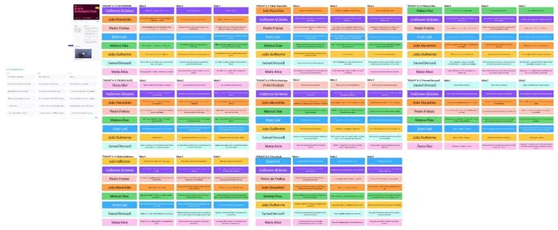
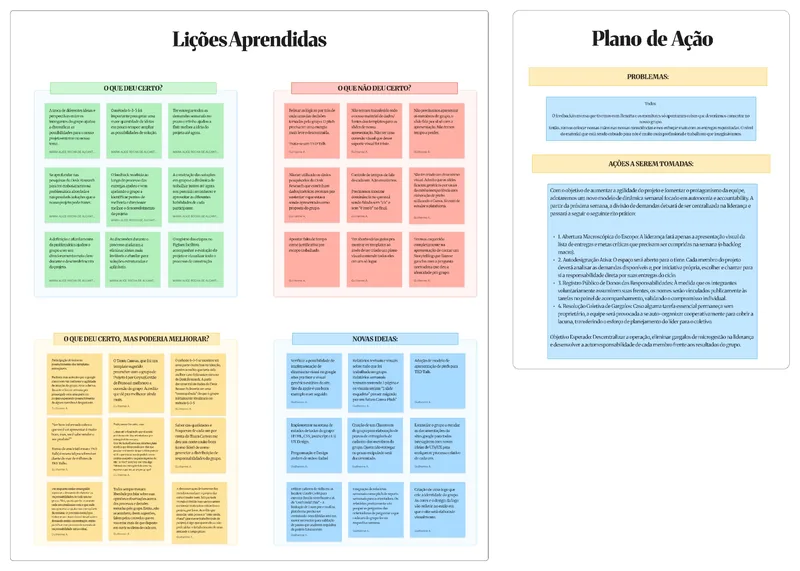
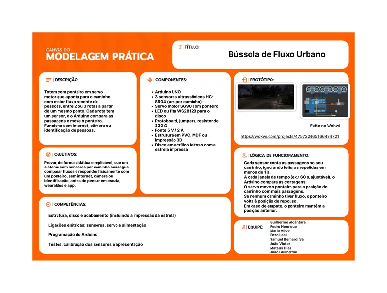

Projeto 1 · Grupo 12Bússola de
Fluxo Urbano
Fluxo Urbano
O projeto
Google Sites do Grupo 12
Acompanhe a documentação e a evolução da Bússola de Fluxo Urbano.
Abrir siteGrupo 12 · Acervo do projeto
Pesquisas, ideias e decisões que acompanham a construção da Bússola de Fluxo Urbano. Explore os materiais do grupo.
O projeto
Acompanhe a documentação e a evolução da Bússola de Fluxo Urbano.
Abrir site

Semana 02
Passado, presente e futuros possíveis para o problema estudado.
Abrir no Figma
Semana 03
O problema, os públicos envolvidos, os desafios e as oportunidades.
Abrir no FigmaSemana 04
A primeira apresentação do percurso de pesquisa e ideação.
Abrir apresentação



Referências
Soluções pesquisadas para comparar mecanismos, possibilidades e limitações.
Abrir no Figma
Construção
Organização do protótipo, componentes, funcionamento e competências.
Abrir no FigmaStatus Report 1
Apresentação da trajetória do grupo e da Bússola de Fluxo Urbano.
Abrir no CanvaSemana 10
Planejamento do projeto e template do segundo registro de lições aprendidas.
Abrir no FigJamOs materiais externos abrem em uma nova aba. O acesso aos arquivos depende das permissões definidas pelo grupo.